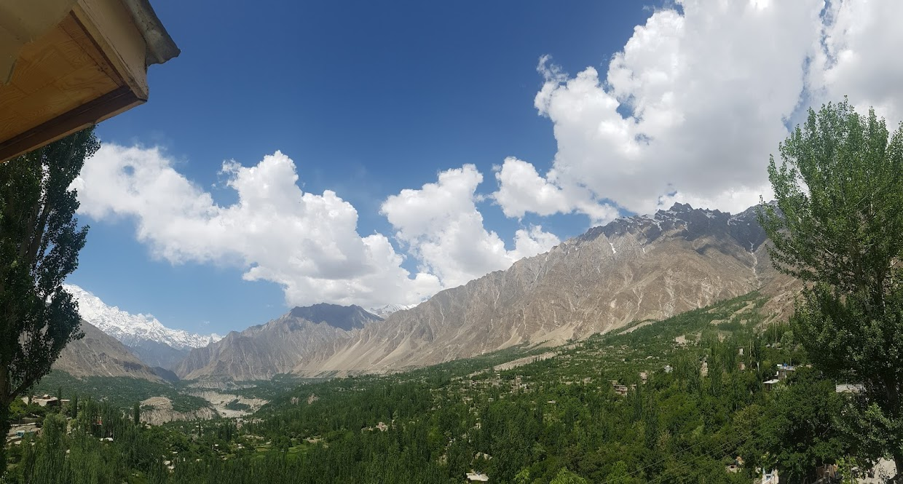
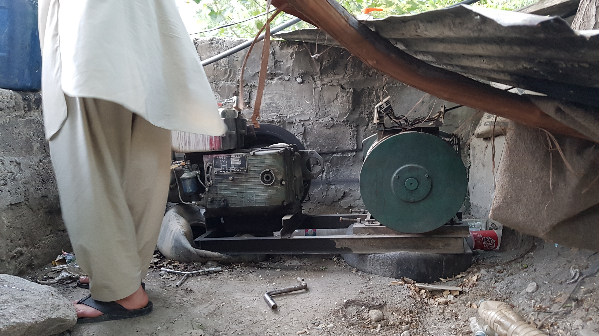
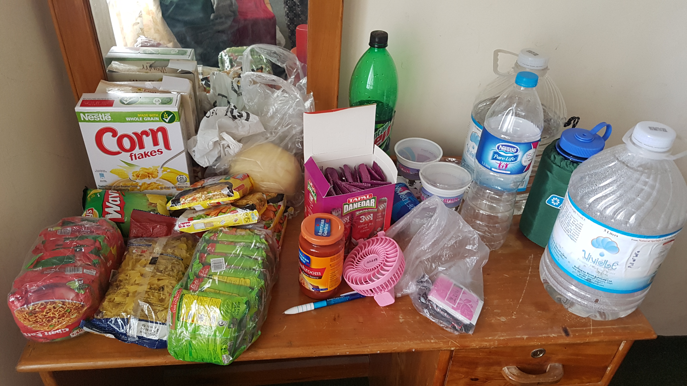

여행 계획이 통째로 바뀌다
2017년 05월 24일
파키스탄
나는 또 거의 5시정도에 깼다. 덩달아 S와 J도 깬것 같다. 맥그로드 간즈에서 만났던 루마이나인 라즈가 먹던 아침식사를 우리도 따라 해보기로 했었다. 그래서 어제 요플레 두통을 구매했다. 무슬리는 METRO매장에서 구매했었다. 꿀만 있으면 딱인데 그것까진 구하진 못했다. 그렇게해서 셋이 섞어 먹는데 맛은 있었지만 비용이 그닥저렴하지는 않았다. 요플레 200루피 무슬리 한통에 250루피니 1회에 1인당 거의 100루피가 넘게 먹는것이었다. 아침식사를 먹는 더 저렴한 방법을 찾아야 겠다.
식사를 마치고 대충 짐을 싼뒤 어제 저렴한 가격으로 흥정을 마쳤던 Hotel Blue Moon으로 향했다. 식재료와 물통등이 상당히 있어서 짐이 많았다. 숙소에 도착해서 추가 매트리스까지 제공받고 짐을 풀었다. 확실히 어제 묶었던 숙소보다 좋았다. 우리 방 앞에는 발코니가 있는데 전망이 기가 막히다. 바로 앞에 전깃줄도 안보이고 훈자 밸리 전경이 눈앞에 펼쳐져 있다. 의자에 앉아 있기만 해도 좋았다. 훈자는 확실히 내가 경험해본 장소중 가장 경치가 뛰어난 마을임이 분명하다. 그리고 이 호텔도 정말 최고인것 같다.

J가 물갈이를 시작했다. 우리는 원래 오늘 알리 마바드에 가서 현금도 찾고 필요한 물건도 구매하고 식사도 하고 오려고 했었는데 J가 물갈이를 심하게 해서 오늘 하루는 숙소에서 쉬기로 했다. 한 4~5일동안 무척 무리한 일정이었기 때문에 이렇게 휴식할 시간이 분명 필요했었다. 오늘은 아무것도 안하고 방안에서 쉬는날로 정했다.
내 폰이 맛이갔다.. 여기는 아침시간 이었는데도 WIFI가 작동했다. 어제 못한 인터넷을 조금 할 수 있었다. 그런데 내 폰이 몇일 전부터(triund트레킹 때부터) WIFI만 키면 폰에 발열이 엄청 심하고 자꾸 재부팅이 된다. 가끔씩 잘 될때도 있는데 안될때가 더 많다. 앞으로 여행이 정말 많이 남았는데 걱정이다. 그렇다고 A/S 를 받을 수도 없고.. 폰을 새로 사자니 공인인증서나, 앱등을 다시 설치하는데 무리가 클것 같다.
J는 방안에서 누워서 쉬는동안 S와 나는 점심 식사를 하러 나왔다. 여기는 말린 과일과 견과류 매장이 많은것 같다. 몇군데 들려서 시식을 했다. 식당은 저렴해 보이는 레스토랑에 들어갔다. 칼국수 같은 수프랑 치킨 브리아니와 오믈렛을 시켜서 둘이 250루피가 나왔다. 저렴한 금액이었다. 나는 나름 맛있게 먹었는데 S는 잘 먹지 못했다. S도 원래 음식 잘 안가린다고 하는데 그정도로 맛이 없었나 보다. 반면에 나는 생각보다 음식을 가리지 않는 사람인것 같다. 나도 몰랐다. 이렇게 아무 음식이나 잘 먹을줄은. 여행에 유리한 식성이라 다행이다.
식당에 어떤 유러피언이 들어왔길래 인사했다. 이제는 외국인에게 인사하는것이 두렵지가 않다. 네덜란드에서 왔고 한국에서 왔다고 하니 히동구(히딩크)를 안다고 한다. 2002년의 기억이 네덜란드 사람들에게도 강렬했나보다. 그는 혼자 파키스탄을 여행중이고 KKH(카라코람 하이웨이) 를 타고 북쪽으로 계속 이동중이라고 한다. 그리고 KKH를 통해 중국 국경으로 넘어 갈거라고 한다. 많은 여행자들이 그 길을 이용하는것 같았다. 나도 마음 같아선 그렇게 올라라고 싶지만 중국 비자가 없다. 무척 아쉬웠다.
밖에서 어제 만났던 짜이 아저씨 아미르를 또 만났다. 요리를 하고 계셨다. 오늘이나 내일 저녁에 같이 식사를 하자고 한다. 저넉에 파티를 하자고 하는데 재미있을것 같다. 라마단 기간에 식사를 못하는것에 대해서 우려했는데 본인은 Islamili muslims 인데 강한 무슬림이 아니라 문제없다고 한다.
숙소를 돌아오는길에 젊은 파키스탄 그룹이 옆을 지나가고 있었다. 슬쩍슬쩍 눈이 마주쳤는데 그냥 내가 인사를 해버렸다. 그 중 한명이 받아주고 그렇게 지나쳤다. 그렇게 걷고 있다가 갑자기 뒤에서 그 친구들이 우리를 불렀다. 인사한걸 못들어서 미안하다는 것이다. 사람들 너무 착하다 ㅜ 그렇게 멀리서 간단히 대화하려다가 결국 가까이 만나서 간단하게 이야기 했다. 같은 대학을 다니는 친구들 이라고 한다. 다음에 길에서 또 마주치자고 한뒤 다시 헤어졌다.
숙소로 돌아왔다. 밖이 뜨거워서 정말 안에만 있었다. 일기도 쓰고, 책도 읽고, J가 가지고 있었던 여행 정보 책들도 받았다. (18GB) 용량이 컸지만 정말 많은 정보가 있어서 받을 수 밖에 없었다. 숙소에는 전기가 안들어온다. 적어도 이 숙소는 아침에 잠깐. 저녁시간에 잠깐 발전기를 돌려서 전기를 생산하는것 같다. 온수 샤워도 힘들고, 인터넷도 안되고 맛있는 밥집도 별로 없는것 같다. 진짜 여행자의 블랙홀이 맞는지는 조금 의심스럽다.
 경유 엔진으로 발전기를 직접 돌려 건물의 전기를 생산한다.
여기 블루문 호텔에서 일하는 사람들 모두 정말 친절하다. 엊그제 사온 짜이 믹스를 타먹고 싶어서 뜨거운물좀 줄 수 없냐고 했는데 공짜로 물을 데워서 준다. 감동ㅜ 여행지를 정말 특별하게 만드는 것은 결국 사람인것 같다. 장소는 고정 불변이지만 사람은 변한다. 현지인이나 여행자들과 그 장소에서 어떤 관계를 맺느냐에 따라서 여행지는 특별해 질 수도 있고 최악이 될 수도 있는것 같다. 나는 파키스탄에서 여행중 사람의 중요성을 배운것 같다.
나는 계획이 거의 변경되었다. 처음에는 한 일주일정도 파키스탄 훈자만 찍고 다른나라로 갈 생각이었는데, 막상 파키스탄에 와보니 사람들이 너무 좋아서, 다른 도시나 마을 사람들을 경험해보고 싶다는 생각이 들었다. 결국 이곳 파키스탄에서는 사람 만나러 여행하게 된다. 얼마나 사람들이 좋은지 사람을 따라 장소를 이동하게 된다.
오늘로 벌써 여행 50일째 짧다면 짧은 시간이고 길다면 긴 여행기간이었다. 그동안 느낀것이 한가지 있다면 단순히 장소 찍기용, SNS용 여행은 내게 만족감을 주지 못한다는 사실이다. 블로그나 여행 가이드북에 나온 유명한 관광지만 찍는 여행은 무언가 허전하고 공허하게 느껴졌다. 내가 직접 내 여행을 만들고 싶다. 유명한 관광지에 가는 것도 좋지만 그 장소에 도달하는 과정에 또 다양한 경험과 가능하면 또 다른 장소를 경험하는것도 좋겠다는 생각이 들었다. 내가 직접 만드는 여행.
이슬라마바드에서 알리가 재직중인 대학 탐방을 하면 어떨까. 그냥 지도에 찍한대로 아무곳이나 로컬 버스를 타고 이동하면 어떨까. KKH 를따라 장소구경 마을 구경 사람구경을 하면 어떨까. 훈자에 있는동안 나만의 계획을 중비 해야겠다. 그것은 관광이라기 보다는 여행이고 또 여행이라기 보다는 여정이다. 온전히 나만 경험했던 여정.
저녁으로 마카로니를 만들어 먹었다. 우리가 가진 전기 포트로 직접 밥을 해먹는다는 사실에 또 자유로움을 느꼈다. 파스타는 그렇게 맛있지는 않았지만 그래도 즐거웠다.
 우리가 사온 식재료들. 뿌듯함.
페이셜이 옆에 자나가길래 먹어보라고 했다. 그들도 우리를 그렇게 환대하는데 우리도 무언가를 나눠줄 수있다는 사실에 기뻤다. 페이셜은 마카로니를 처음 먹어봤다고 했다.
페이셜이 한국에서 살고 싶은지 한국에 어떻게 갈수 있는지 이것저것 물어본다. 아직 젊으니 무엇이든지 할 수 있지 않을까. 한국의 공단에 파키스탄 사람들이 많다. 개인적으로는 공부를 해서 사무직으로 한국에 갔으면 하지만 쉽지는 않다. 그런데 한편으로는 이렇게 순수한 사람들이 자본에 찌들어 있는 한국에 가서 물들지 않을까 걱정이 되기도 한다. 나는 한국이 싫어서 떠나왔는데 네팔 인도 파키스탄에서 한국에서 일하고 싶다는 수많은 사람들을 만났다.